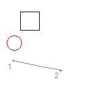
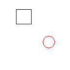

|
Move Method |
Moves an object along a vector.
Signature
object.Move Point1, Point2
Object
All Drawing Objects, AttributeReference
The object this method applies to.
Point1
Variant (three-element array of doubles); input-only
The 3D WCS coordinates specifying the first point of the move vector.
Point2
Variant (three-element array of doubles); input-only
The 3D WCS coordinates specifying the second point of the move vector.
Remarks
The two points you specify define a displacement vector indicating how far the given object is to be moved and in what direction.
 |
 |
| Given object with two points indicated |
Moved object |
| Comments? |